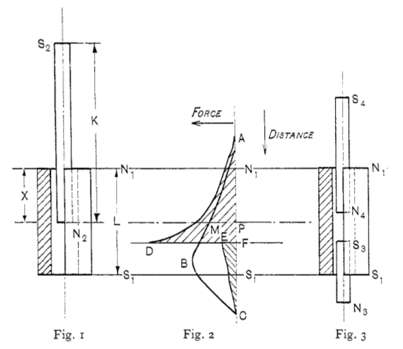

In considering the design of the magnetic circuit produced by a wound solenoid placed around the straight iron pieces to be magnetized and the possibility of the improvement of the magnetic circuit by the introduction of iron around the outside of the solenoid, it was found that the problem did not readily lend itself to theoretical treatment. Considerable magnetic leakage will occur throughout a practical magnetic circuit and to an extent that is not easily determinable. It follows that, if the degree of magnetic leakage is not known, the magnitude of the useful flux is also an uncertain factor, and the usefulness of theoretical treatment for practical application is rendered of doubtful value.
Consider the example of a soft-iron plunger and solenoid. Let:

Let $N_1$ and $S_1$ represent the respecitive pole strengths, and $S_2$ $N_2$ represent a soft-iron plunger in Fig. 1.
If the plunger is brought from a distance towards the coil as in Fig. 1., a gradually increasing force of attraction will be exerted between them, similar to the force of attraction between a piece of iron and a common magnet. When the plunger is entirely outside the solenoid, it will be a magnet by induced effect of the winding carrying current; the attractive forces, however, in this position would not be great, because the pole strengths by induction are relatively of small magnitude.
After the end $N_2$ has entered and proceeds within the solenoid, the pole strength of the plunger will rapidly increase, due to the magnetizing effect of the winding carrying current. Fig. 1 shows the plunger having entered a distance $X$ into the solenoid. In this position the integral magnetizing effect is practically equal to $I \cdot 257$ times the total ampere turns contained in the length $X$ of the winding. The forces tending to draw the plunger into the winding are the forces of attraction between $N_2$ and $S_1$, and $N_1$ and $S_2$, plus the force of repulsion between $N_2$ and $N_1$; the only opposing force is that of repulsion between $S_1$ and $S_2$.
The effect of the algebraic sum of these forces, combined with the increasing magnitudes of the pole strengths $N_2$ and $S_2$ with increase of the distance $X$, is to give a force curve such as $ABC$ (Fig. 2). When the end $N_2$ of the plunger has entered the solenoid a distance $X$, the resultant force on a plunger is represented by $PM$; similarly, ordinates of the curve $ABC$ give the magnitudes of the resultant force on the plunger for any position of $N_2$.
The curve $ABC$ illustrates that, for a plunger considerably longer than the solenoid, the pull will increase to a maximum value which will occur just previous to the whole length of the core of the winding being occupied by the iron of the plunger, i.e., when $N_2$ approaches $S_1$, or the length $X$ becomes nearly equal to $L$.
When the end of the plunger emerges through the solenoid, i.e. $X$ exceeds the length $L$, the force rapidly falls, as shown by the curve $BC$. The point $C$, which corresponds with zero force, is obtained when the plunger is symmetrical with respect to the solenoid. Using the notations of Fig. 1 and 2 the position of zero force is given by the equation
\begin{equation} K = L + 2 (S_{1}C) = L + 2 (X - L) \end{equation}
Or:
\begin{equation} \label{eq:distance_zero_force} X = \frac{K}{2L} \end{equation}
Therefore max force position is approximately when $X$ tends to $B$. The position of $C$ and the slope of $BC$ will depend on the ration of the the plunger and the solenoid (i.e. $\frac{K}{L}$).
For a plunger of length $K$ that is $< L$, the force will increase until $S_2$ approaches $N_1$; further movement of the plunger will produce a sharp fall of force to zero value when the plunger lies wholly within the winding.
To obtain a fairly large maximum force with a given solenoid, the plunger should be appreciably longer than the solenoid and be arranged to operate over a short distance where it occupies nearly the whole length of the winding core. In Fig. 2, since the line $AC$ represents the displacement of the plunger corresponding to the position of $N_2$ and the curve $ABC$ is drawn to represent the magnetic forces, the area enclosed by the curve $ABC$ and the line $AC$ represents the work done by the force on the plunger.
To increase the magnitude of the working forces, using the same winding, the arrangement of Fig. 1 is modified and shown in Fig. 3, which illustrates the central iron core in two parts $S_{4}N_{4}$ and $S_{3}N_{3}$. The shorter of the two parts, namely $S_{3}N_{3}$, is first inserted into the solenoid from below, and the force curve is shown by $CE$ (Fig. 2) and the work done by area $CEF$. The iron part $S_{3}N_{3}$ is fixed in-place. the movable part of the core is inserted into the solenoid from the top and the force curve would take up a form such as $AD$ and the work done be represented by the area $ADF$. The magnitudes of the force ordinates for the plunger $S_{4}N_{4}$, as represented by the curve $AD$, are greater than the corresponding force ordinates for the single plunger $S_{2}N_{2}$ of Fig. 1. This is due to the added attractive effect to the movable iron core $S_{4}N_{4}$ from the stationary core $S_{3}N_{3}$. When the poles $N_{4}$ and $S_{3}$ come close to each other, the attractive force attain relatively high values.
Note however that when the poles $N_{4}$ and $S_{3}$ come into contact the pull is represented by $DF$. Because once in contact the two individual iron-cores combine to become one, similar to when the iron-core in Fig. 1 reaches through to the end where it satisfies Equation. \ref{eq:distance_zero_force}
Higgs, P.J. The Design of Solenoid Electromagnets. (1925). J. Sci. Instrum. Vol.2 No.10.